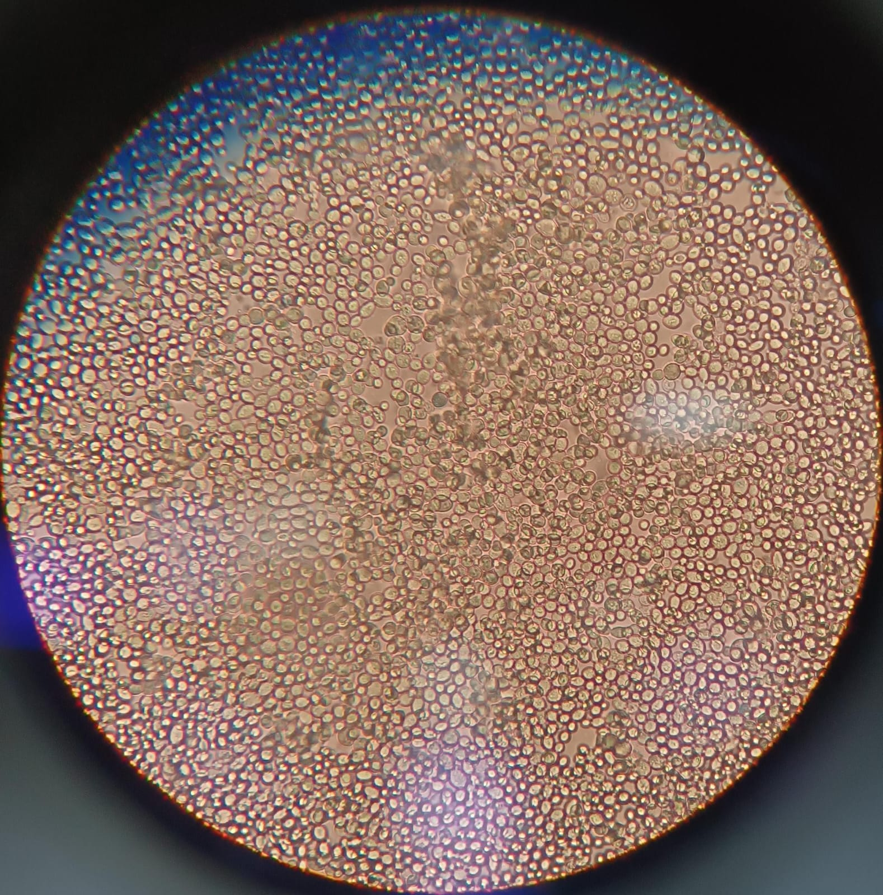

Integração entre matemática e microbiologia por meio de atividades experimentais
Site em desenvolvimentoIntegration between mathematics and microbiology through experimental activities
Sobre o ProjetoAbout the Project
O projeto Micromat é uma iniciativa do CEPID B³, patrocinado pela FAPESP e vinculado à Universidade de São Paulo (USP), que utiliza microrganismos como ferramenta para o ensino de matemática e ciência. A proposta é aproximar os alunos de conceitos abstratos por meio da observação do mundo microscópico.
The Micromat project is an initiative of CEPID B³, funded by FAPESP and affiliated with the University of São Paulo (USP), which uses microorganisms as a tool for teaching mathematics and science. Its goal is to bring students closer to abstract concepts through the observation of the microscopic world.
Nesse contexto, a microbiologia — área dedicada ao estudo dos microrganismos — permite explorar grandezas em escalas extremas, tornando números muito pequenos e muito grandes mais compreensíveis e significativos.
In this context, microbiology — the field dedicated to the study of microorganisms — allows the exploration of extreme scales, making very small and very large numbers more understandable and meaningful.
Entre os organismos estudados, destacam-se as leveduras, fungos unicelulares de grande relevância científica e industrial. Um exemplo central é a Saccharomyces cerevisiae, amplamente utilizada na produção de alimentos e como organismo modelo em pesquisa.
Among the studied organisms, yeasts stand out as unicellular fungi of great scientific and industrial relevance. A key example is Saccharomyces cerevisiae, widely used in food production and as a model organism in research.

Saccharomyces cerevisiae
Dessa forma, o projeto Micromat utiliza a Saccharomyces cerevisiae como uma ponte entre a microbiologia e a matemática, permitindo que conceitos como exponenciais, logaritmos e geometria deixem de ser apenas abstratos e passem a ser compreendidos de maneira aplicada e concreta.
In this way, the Micromat project uses Saccharomyces cerevisiae as a bridge between microbiology and mathematics, allowing concepts such as exponentials, logarithms, and geometry to move beyond abstraction and be understood in an applied and concrete way.
Mais do que um conjunto de experimentos, o projeto oferece uma experiência de imersão no pensamento científico. Ao aproximar os alunos da prática laboratorial, revela também um universo fascinante: o mundo invisível dos microrganismos, no qual pequenas escalas escondem grandes descobertas.
More than a set of experiments, the project offers an immersive experience in scientific thinking. By bringing students closer to laboratory practice, it also reveals a fascinating universe: the invisible world of microorganisms, where small scales hide great discoveries.
Visitas às EscolasSchool Visits
O projeto Micromat leva a integração entre matemática e microbiologia diretamente às escolas, por meio de atividades experimentais que tornam conceitos abstratos mais concretos e significativos.
The Micromat project brings the integration of mathematics and microbiology directly to schools through experimental activities that make abstract concepts more concrete and meaningful.